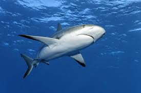
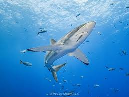
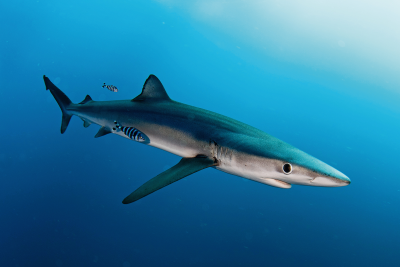

🌟про морську акулу❄
Аку́ли — надряд хрящових риб, переважно пелагічних. В українській мові слово «аку́ла» запозичене з російської мови, куди потрапило через посередництво саамських мов у районі Кольського півострова з давньоскандинавської мови від «hákarl». Найдавніші представники існували близько 420—450 млн років тому
🌺дивовижні факты акули!🌺
Акули борознять океани нашої блакитної планети понад чотириста мільйонів років. Розкопки підтверджують, що деякі з найбільш ранніх видів акул були сучасниками динозаврів. В той час як більшість людей панічно бояться акул та вважають їх найбільш смертоносними тваринами, шанси бути вбитим акулою в сотні раз менші ніж шанси бути вбитим бджолами чи собаками.
🍀помічники акули🍃
Спочатку акула шукає загальний слід. Запах крові посилюється при наближенні до мети, а весь цей шлях акула може практично безпомилково пройти за допомогою нюху. Коли до жертви залишається близько 250 метрів, то включаються інші “помічники” – слух, сейсмосенсорні органи та електрорецепція.
